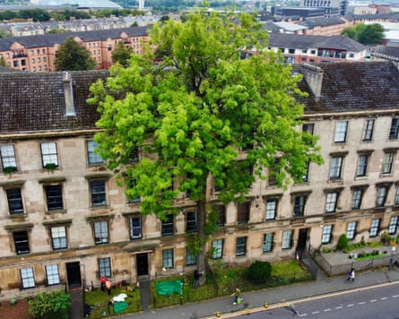
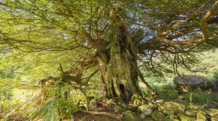
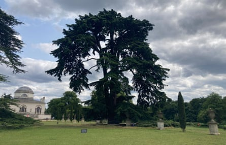
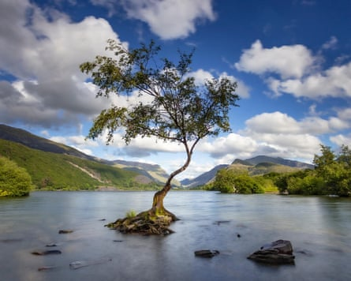

A cedar tree climbed by the Beatles, an oak that may have inspired Virginia Woolf and a lime representing peace in Northern Ireland are among those shortlisted for tree of the year 2025.
Voting opens on Friday for the Woodland Trust’s annual competition, which aims to celebrate and raise awareness of rare, ancient or at-risk trees across the UK.
The winner will be announced in September and will represent the country in the European tree of the year finals.
Ten nominees have been chosen to meet this year’s theme of “rooted in culture”, which seeks to highlight how trees inspire creative minds and become ingrained in the cultural landscape.
The actor Judi Dench, who is patron of the Woodland Trust, said: “Our oldest trees hold more stories than Shakespeare; some were putting down roots long before he began writing, more than 400 years ago. They are as much part of our heritage as any literature.”
The Argyle Street Ash in Glasgow was described in a 1935 book as ‘quite the most graceful ash I have seen’.Photograph: Douglas Crawford Tree Wise Urban Forestry/PA
A panel of experts selected nine trees of differing ages and species for the shortlist, while the public chose a 10th as a wildcard entry.
This year David Treanor from Glasgow put forward the Argyle Street Ash, pointing to its reference in James Cowan’s 1935 book From Glasgow’s Treasure Chest as “quite the most graceful ash I have seen”.
The shortlist also includes the Borrowdale Yews in Cumbria , a huddle of ancient trees described by William Wordsworth in his 1803 poem Yew Trees.
A tree that is part of the Borrowdale Yews in Cumbria, a huddle of ancient trees described by William Wordsworth in an 1803 poem.Photograph: James Reader/PA
The Beatles’ Cedar Tree in Chiswick, west London, which is about 300 years old, was nominated because the band perched on one of its low-swooping boughs in a video for their song Rain in 1966.
The King of Limbs in Wiltshire made the list after Radiohead named their 2011 album after the ancient oak, which they spotted when recording at nearby Tottenham House.
Also nominated is the Tree of Peace and Unity in County Antrim, Northern Ireland – a lime formed of two trees that grew together into a single trunk and became a symbol of reconciliation when leaders met there in 1998 at the signing of the Good Friday agreement.
The Beatles perched on a low-swooping bough of this cedar tree in Chiswick in a video for their song Rain in 1966.Photograph: Woodland Trust/PA
The nominated Lollipop Tree on Salisbury Plain in Wiltshire played a starring role in the final scenes of Sam Mendes’s first world war film 1917, and the Lonely Tree in Llanberis, Wales, may feature in Netflix’s upcoming series of The Witcher.
The Knole Park Oak in Kent made the list as the tree believed to have inspired an epic poem in Virginia Woolf’s novel Orlando.
The Lonely Tree in Llanberis, Wales.Photograph: Howard Litherland/PA
Voting is open until 19 September via the Woodland Trust website, with the winner to be announced on 26 September.